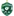
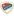
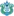

🏆 EURO 2024
| Date | Fixture  Bold-faced team is selected by AIGoalie to win. Bold-faced team is selected by AIGoalie to win. |
Odds Pre-match odds of the selected team winning. Note that odds are fetched once per day at 00:00 GMT, meaning some matches may have live odds. Also odds may not be available for all leagues. |
Win How confident AIGoalie is that the selected team will win. Low confidence indicates unpredictability of the match. ▼ |
Result Whether the selected team won, drew, or lost. |
Over The minimum number of goals predicted by AIGoalie. ⚽ = over 0.5 ⚽⚽ = over 1.5 ⚽⚽⚽ = over 2.5 ... ► |
Alerts Home 🏥 = Considerable injuries 🏥🏥 = Major injuries 📉 = Dip in form Note, you may see injuries when expanding match but no alert here, meaning the model does not consider them important. |
Alerts Away 🏥 = Considerable injuries 🏥🏥 = Major injuries 📉 = Dip in form Note, you may see injuries when expanding match but no alert here, meaning the model does not consider them important. |
|
|---|---|---|---|---|---|---|---|---|
| Wed. 10 Jul. | Netherlands  20:00  England Form: DLWW Form: DDWW |
-0.68 vs 0.66 | 2.78 | 56% | ⚽ 1.13 |
📉 Home team has a dip in form recently |
🏆 Copa América 2024
| Date | Fixture Bold-faced team is selected by AIGoalie to win. |
Odds Pre-match odds of the selected team winning. Note that odds are fetched once per day at 00:00 GMT, meaning some matches may have live odds. Also odds may not be available for all leagues. |
Win How confident AIGoalie is that the selected team will win. Low confidence indicates unpredictability of the match. ▼ |
Result Whether the selected team won, drew, or lost. |
Over The minimum number of goals predicted by AIGoalie. ⚽ = over 0.5 ⚽⚽ = over 1.5 ⚽⚽⚽ = over 2.5 ... ► |
Alerts Home 🏥 = Considerable injuries 🏥🏥 = Major injuries 📉 = Dip in form Note, you may see injuries when expanding match but no alert here, meaning the model does not consider them important. |
Alerts Away 🏥 = Considerable injuries 🏥🏥 = Major injuries 📉 = Dip in form Note, you may see injuries when expanding match but no alert here, meaning the model does not consider them important. |
|
|---|---|---|---|---|---|---|---|---|
| Wed. 10 Jul. | Argentina  2:0  Canada Form: WWWW Form: LWDW |
1.06 vs -1.77 | 1.01 | 71% | ✓ | ⚽⚽ 2.2 |
🌍 Global
| Date | Fixture Bold-faced team is selected by AIGoalie to win. |
Odds Pre-match odds of the selected team winning. Note that odds are fetched once per day at 00:00 GMT, meaning some matches may have live odds. |
Win How confident AIGoalie is that the selected team will win. Low confidence indicates unpredictability of the match. ▼ |
Result Whether the selected team won, drew, or lost. |
Over The minimum number of goals predicted by AIGoalie. ⚽ = over 0.5 ⚽⚽ = over 1.5 ⚽⚽⚽ = over 2.5 ... ► |
Alerts Home 🏥 = Considerable injuries 🏥🏥 = Major injuries 📉 = Dip in form Note, you may see injuries when expanding match but no alert here, meaning the model does not consider them important. |
Alerts Away 🏥 = Considerable injuries 🏥🏥 = Major injuries 📉 = Dip in form Note, you may see injuries when expanding match but no alert here, meaning the model does not consider them important. |
|
|---|---|---|---|---|---|---|---|---|
| Wed. 10 Jul. | Ludogorets Razgrad  19:00  Dinamo Batumi Form: LLWL Form: LDLW |
1.59 vs -2.05 | 1.22 | 76% | ⚽⚽⚽ 3.2 |
📉 Home team has a dip in form recently | 📉 Away team has a dip in form recently | |
| Wed. 10 Jul. | FC RFS  18:00  Larne FC Form: WWWW Form: WWDW |
1.23 vs -1.69 | 1.51 | 72% | ⚽⚽ 2.17 |
|||
| Wed. 10 Jul. | Yokohama F. Marinos  7:6  Mito HollyHock Form: LLLL Form: WLDL |
1.16 vs -2.02 | 1.67 | 72% | ✓ | ⚽ 1.64 |
📉 Home team has a dip in form recently | 📉 Away team has a dip in form recently |
| Wed. 10 Jul. | Slovan Bratislava  18:00  Struga Trim & Lum Form: LLLW Form: LWWL |
1.12 vs -1.89 | 1.42 | 71% | ⚽⚽ 2.23 |
🏥 📉 Home team has considerable injuries and a dip in form recently | 📉 Away team has a dip in form recently | |
| Wed. 10 Jul. | Argentina 2:0 Canada Form: WWWW Form: LWDW |
1.06 vs -1.77 | 1.01 | 71% | ✓ | ⚽⚽ 2.2 |
||
| Wed. 10 Jul. | Sanfrecce Hiroshima  4:0  Iwaki FC Form: WDDL Form: WLLL |
1.05 vs -1.65 | 1.38 | 71% | ✓ | ⚽ 1.68 |
📉 Home team has a dip in form recently | 📉 Away team has a dip in form recently |
| Wed. 10 Jul. | Vissel Kobe  2:0 Tokushima Vortis Form: LDWW Form: LWDW |
1.03 vs -1.73 | 1.65 | 70% | ✓ | ⚽ 1.59 |
||
| Wed. 10 Jul. | Kashima Antlers  2:1  Fujieda MYFC Form: DDLW Form: LLWW |
0.96 vs -1.79 | 1.48 | 68% | ✓ | ⚽⚽ 2.04 |
📉 Home team has a dip in form recently | 📉 Away team has a dip in form recently |
| Wed. 10 Jul. | FC Flora Tallinn  17:00  NK Celje Form: DWDL Form: WLWD |
-1.33 vs 0.92 | 1.52 | 67% | ⚽⚽ 2.48 |
📉 Home team has a dip in form recently | 📉 Away team has a dip in form recently | |
| Wed. 10 Jul. | Cerezo Osaka  1:2  Ventforet Kofu Form: DWWD Form: DLDL |
0.86 vs -1.58 | 65% | ❌ | ⚽ 1.9 |
📉 Away team has a dip in form recently | ||
| Wed. 10 Jul. | Atlanta United FC  1:2  Indy Eleven Form: DWLL Form: WWLD |
0.81 vs -1.33 | 63% | ❌ | ⚽⚽ 2.06 |
📉 Home team has a dip in form recently | 📉 Away team has a dip in form recently | |
| Wed. 10 Jul. | Kawasaki Frontale  1:3  Oita Trinita Form: DDDD Form: LLDW |
0.72 vs -1.72 | 1.56 | 59% | ❌ | ⚽ 1.96 |
🏥 📉 Home team has considerable injuries and a dip in form recently | 📉 Away team has a dip in form recently |
| Wed. 10 Jul. | Netherlands 20:00 England Form: DLWW Form: DDWW |
-0.68 vs 0.66 | 2.78 | 56% | ⚽ 1.13 |
📉 Home team has a dip in form recently | ||
| Wed. 10 Jul. | Jeonbuk Hyundai Motors  2:1  Jeju United Form: LDLD Form: LWLW |
0.6 vs -1.76 | 2.3 | 54% | ✓ | ⚽ 1.92 |
📉 Home team has a dip in form recently | 🏥 📉 Away team has considerable injuries and a dip in form recently |
| Wed. 10 Jul. | FK Auda  20:00  B36 Tórshavn Form: LLLL Form: DLWW |
0.56 vs -0.56 | 1.93 | 53% | ⚽⚽ 2.04 |
📉 Home team has a dip in form recently | 📉 Away team has a dip in form recently | |
| Wed. 10 Jul. | Avispa Fukuoka  0:2  Ehime FC Form: DWWL Form: WWLL |
0.5 vs -1.25 | 1.53 | 50% | ❌ | ⚽ 1.89 |
🏥 📉 Home team has considerable injuries and a dip in form recently | 📉 Away team has a dip in form recently |
| Wed. 10 Jul. | Manila Digger FC  0:3  One Taguig FC Form: LLWW Form: WWWD |
-0.95 vs 0.45 | 46% | ✓ | ⚽⚽⚽ 3.55 |
📉 Home team has a dip in form recently | ||
| Wed. 10 Jul. | FC Tokyo  1:2  JEF United Chiba Form: WWLL Form: WLWL |
0.37 vs -1.09 | 2.2 | 40% | ❌ | ⚽⚽ 2.74 |
📉 Home team has a dip in form recently | 📉 Away team has a dip in form recently |
| Wed. 10 Jul. | KÍ Klaksvík 19:00  FC Differdange 03 Form: WLWW Form: DWDL |
0.37 vs -0.95 | 2.02 | 39% | ⚽ 1.7 |
📉 Home team has a dip in form recently | 📉 Away team has a dip in form recently | |
| Wed. 10 Jul. | FK Borac Banja Luka  20:00  KF Egnatia Form: WWLL Form: LWDW |
0.32 vs -0.85 | 1.67 | 36% | ⚽ 1.6 |
📉 Home team has a dip in form recently | ||
| Wed. 10 Jul. | FC Seoul  2:1  Daejeon Hana Citizen Form: WWWL Form: WLLD |
0.32 vs -1.44 | 1.86 | 35% | ✓ | ⚽⚽ 2.49 |
📉 Home team has a dip in form recently | 🏥 📉 Away team has considerable injuries and a dip in form recently |
| Wed. 10 Jul. | Sport Club Internacional  postponed  Esporte Clube Juventude Form: LDDW Form: LWLL |
0.28 vs -1.39 | 33% | ⚽ 1.79 |
🏥 📉 Home team has considerable injuries and a dip in form recently | 📉 Away team has a dip in form recently | ||
| Wed. 10 Jul. | FK Velez Mostar  19:00  Inter Club d'Escaldes Form: WWDW Form: LWDW |
0.2 vs -0.2 | 1.44 | 26% | ⚽⚽ 2.29 |
|||
| Wed. 10 Jul. | Mirassol Futebol Clube (SP)  1:0  Clube de Regatas Brasil (AL) Form: LLDD Form: WDLD |
0.17 vs -0.87 | 24% | ✓ | ⚽ 1.4 |
📉 Home team has a dip in form recently | 📉 Away team has a dip in form recently | |
| Wed. 10 Jul. | JIPPO Joensuu  2:2'  Järvenpään Palloseura Form: LDLW Form: LWDD |
-0.82 vs 0.15 | 22% | ⚽⚽ 2.42 |
📉 Home team has a dip in form recently | 📉 Away team has a dip in form recently | ||
| Wed. 10 Jul. | Dinamo Minsk  19:45  FC Pyunik Yerevan Form: WWWW Form: WWWW |
0.13 vs -0.76 | 2.62 | 20% | ⚽⚽ 2.53 |
|||
| Wed. 10 Jul. | Chacaritas FC  21:00  Club Leones del Norte Form: LLWL Form: LWWW |
0.11 vs -0.77 | 1.72 | 18% | ⚽ 1.25 |
📉 Home team has a dip in form recently | ||
| Wed. 10 Jul. | Ulsan HD FC  0:1  Gwangju FC Form: WWLD Form: LLWL |
0.08 vs -1.12 | 2.02 | 16% | ❌ | ⚽ 1.82 |
🏥 📉 Home team has considerable injuries and a dip in form recently | 🏥 📉 Away team has considerable injuries and a dip in form recently |
| Wed. 10 Jul. | Albirex Niigata  1:6  V-Varen Nagasaki Form: DDWL Form: WWDW |
0.04 vs -0.82 | 2.46 | 13% | ❌ | ⚽⚽ 2.37 |
📉 Home team has a dip in form recently | |
| Wed. 10 Jul. | AD Nueve de Octubre  21:00  Gualaceo SC Form: LLWW Form: LWLL |
0.0 vs -0.78 | 1.87 | 10% | ⚽ 1.41 |
📉 Home team has a dip in form recently | 📉 Away team has a dip in form recently | |
| Wed. 10 Jul. | Pohang Steelers  2:0  Gangwon FC Form: WDWD Form: LLWW |
-0.01 vs -0.83 | 1.98 | 10% | ✓ | ⚽⚽ 2.01 |
📉 Home team has a dip in form recently | 🏥 📉 Away team has considerable injuries and a dip in form recently |
| Wed. 10 Jul. | Sacramento Republic FC  1:2  Seattle Sounders FC Form: LDWL Form: DWWW |
-0.73 vs -0.01 | 2.68 | 10% | ✓ | ⚽ 1.13 |
📉 Home team has a dip in form recently | |
| Wed. 10 Jul. | Grêmio Foot-Ball Porto Alegrense  22:30  Cruzeiro Esporte Clube Form: DWDW Form: LWLL |
-0.06 vs -1.0 | 9% | ⚽ 1.69 |
🏥 Home team has considerable injuries | 🏥 📉 Away team has considerable injuries and a dip in form recently | ||
| Wed. 10 Jul. | Ordabasy Shymkent  0:0 FC Petrocub Hincesti Form: WWWD Form: WDWW |
-0.11 vs -0.39 | 1.67 | 8% | ⁃ | ⚽⚽ 2.41 |
||
| Wed. 10 Jul. | FCI Levadia U21  postponed  Viimsi JK Form: LWLW Form: DWLW |
-0.12 vs -0.25 | 2.32 | 8% | ⚽ 1.6 |
📉 Home team has a dip in form recently | 📉 Away team has a dip in form recently | |
| Wed. 10 Jul. | Sagan Tosu  3:1  Yokohama FC Form: LLWW Form: WWWW |
-0.12 vs -0.65 | 3.4 | 8% | ✓ | ⚽⚽ 2.24 |
📉 Home team has a dip in form recently | |
| Wed. 10 Jul. | Kyoto Sanga  3:1  Shimizu S-Pulse Form: LDWW Form: LLWW |
-0.14 vs -0.51 | 2.96 | 7% | ✓ | ⚽ 1.92 |
📉 Away team has a dip in form recently | |
| Wed. 10 Jul. | Club Athletico Paranaense  23:00  Esporte Clube Bahia Form: LWLW Form: WLWL |
-0.28 vs -0.68 | 1.01 | 4% | ⚽⚽ 2.67 |
🏥 📉 Home team has considerable injuries and a dip in form recently | 📉 Away team has a dip in form recently | |
| Wed. 10 Jul. | Shonan Bellmare  1:0  Tokyo Verdy Form: LDLW Form: WLWD |
-0.36 vs -0.4 | 2.5 | 3% | ✓ | ⚽⚽ 2.22 |
📉 Home team has a dip in form recently | 📉 Away team has a dip in form recently |
| Wed. 10 Jul. | Clube de Regatas Vasco da Gama  23:00  Sport Club Corinthians Paulista Form: LDWW Form: DLWL |
-0.41 vs -0.6 | 2% | ⚽⚽ 2.44 |
🏥 📉 Away team has considerable injuries and a dip in form recently | |||
| Wed. 10 Jul. | Hokkaido Consadole Sapporo  6:3  Montedio Yamagata Form: LLLL Form: LDWW |
-0.52 vs -0.54 | 0% | ✓ | ⚽ 1.54 |
🏥🏥 📉 Home team has MAJOR injuries and a dip in form recently |
Last updated 18:18:10 2024-07-10
Privacy Policy - 18+. Gamble Responsibly. - Terms